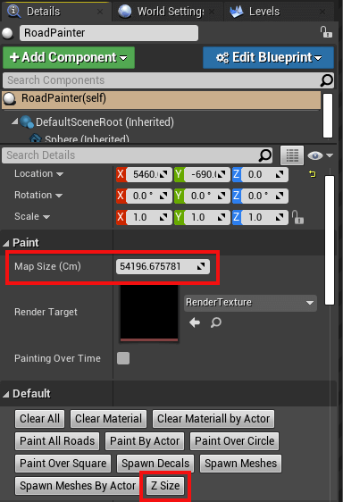
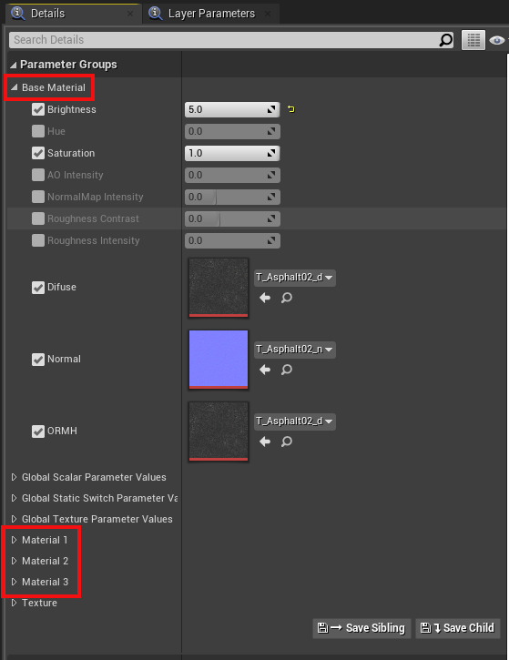
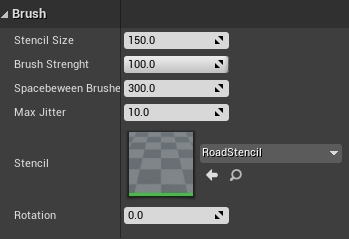
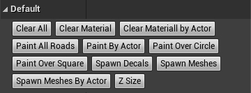
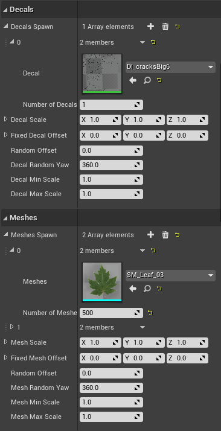
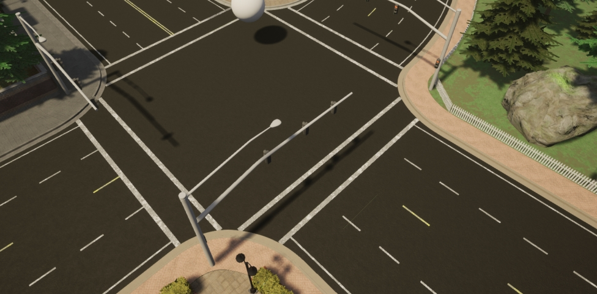
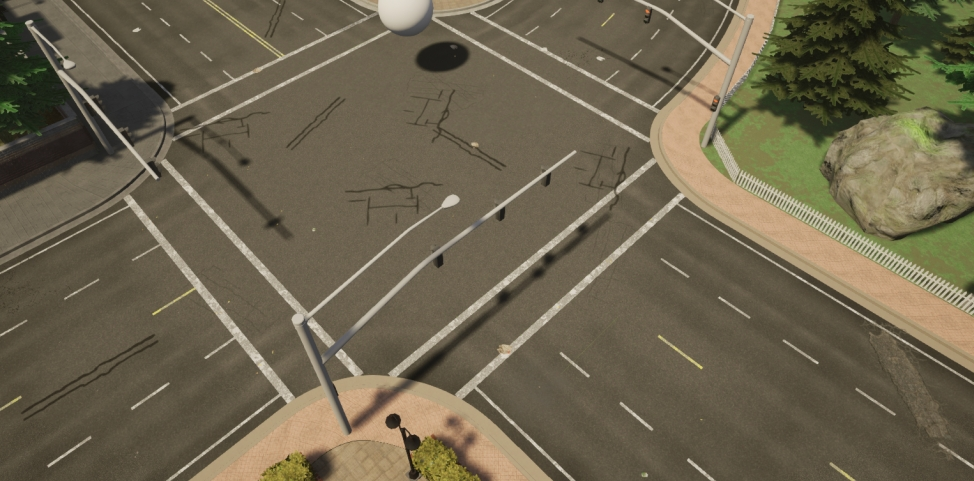

Customizing Maps: Road Painter
This guide explains what the road painter tool is, how to use it to customize the appearance of the road by combining different textures, how to add decals and meshes and how to update the appearance of lane markings according to the road texture.
- What is the road painter?
- Before you begin
- Establish the road painter, master material and render target
- Prepare the master material
- Paint the road
- Update the appearance of lane markings
- Next steps
What is the road painter?
The Road Painter tool is a blueprint that uses OpenDRIVE information to paint roads quickly. It takes a master material and applies it to a render target of the road to use as a canvas. The master material is made up of a collection of materials that can be blended using brushes and applied as masks. There is no need to apply photometry techniques nor consider the UVs of the geometry.
Before you begin
The road painter uses the OpenDRIVE information to paint the roads. Make sure that your .xodr file has the same name as your map for this to work correctly.
Establish the road painter, master material and render target
1. Create the RoadPainter actor.
- In the Content Browser, navigate to
Content/Carla/Blueprints/LevelDesign. - Drag the
RoadPainterinto the scene.
2. Create the Render Target.
- In the Content Browser, navigate to
Content/Carla/Blueprints/LevelDesign/RoadPainterAssets. - Right-click on the
RenderTargetfile and selectDuplicate. - Rename to
Tutorial_RenderTarget.
3. Create the master material instance.
- In the Content Browser, navigate to
Game/Carla/Static/GenericMaterials/RoadPainterMaterials. - Right-click on
M_RoadMasterand select Create Material Instance. - Rename to
Tutorial_RoadMaster.
4. Re-calibrate the Map Size (Cm) so that it is equal to the actual size of the map.
- Select the
RoadPainteractor in the scene. - Go to the Details panel and press the Z-Size button. You will see the value in Map Size (Cm) change.

5. Synchronize the map size between the RoadPainter and Tutorial_RoadMaster.
- In the Content Browser, open
Tutorial_RoadMaster. - Copy the value Map Size (Cm) from the previous step and paste it to Global Scalar Parameter Values -> Map units (CM) in the
Tutorial_RoadMasterwindow. - Press save.

6. Create the communication link between the road painter and the master material.
The Tutorial_RenderTarget will be the communication link between the road painter and Tutorial_RoadMaster.
- In the
Tutorial_RoadMasterwindow, apply theTutorial_RenderTargetto Global Texture Parameter Values -> Texture Mask. - Save and close.
- In the main editor window, select the road painter actor, go to the Details panel and apply the
Tutorial_RenderTargetto Paint -> Render Target.
Prepare the master material
The Tutorial_RoadMaster material you created holds the base material, extra material information, and parameters that will be applied via your Tutorial_RenderTarget. You can configure one base material and up to three additional materials.

To configure the materials, double-click the Tutorial_RoadMaster file. In the window that appears, you can select and adjust the following values for each material according to your needs:
- Brightness
- Hue
- Saturation
- AO Intensity
- NormalMap Intensity
- Roughness Contrast
- Roughness Intensity
You can change the textures for each material by selecting the following values and searching for a texture in the search box:
- Diffuse
- Normal
- ORMH
Explore some of the CARLA textures available in Game/Carla/Static/GenericMaterials/Asphalt/Textures.
Paint the road
1. Create the link between the road painter and the roads.
- In the main editor window, search for
Road_Roadin the World Outliner search box. - Press
Ctrl + Ato select all the roads. - In the Details panel, go to the Materials section and apply
Tutorial_RoadMasterto Element 0, Element 1, Element 2, and Element 3.
2. Choose the material to customize.
Each of the materials we added to Tutorial_RoadMaster are applied to the roads separately and application is configured with the Brush tool. To apply and customize a material:
- Select the road painter actor
- In the Details panel, select the material to work with in the Mask Color dropdown menu.

3. Set the brush and stencil parameters.
There are a variety of stencils to choose from in GenericMaterials/RoadStencil/Alphas. The stencil is used to paint the road according to your needs and can be adjusted using the following values:
- Stencil size — Size of the brush.
- Brush strength — Roughness of the outline.
- Spacebeween Brushes — Distance between strokes.
- Max Jitter — Size variation of the brush between strokes.
- Stencil — The brush to use.
- Rotation — Rotation applied to the stroke.


4. Apply each material to the desired portions of the road.
Choose where to apply the selected material via the buttons in the Default section of the Details panel:
- Paint all roads — Paint all the roads.
- Paint by actor — Paint a specific, selected actor.
- Paint over circle — Paint using a circular pattern, useful to provide variation.
- Paint over square — Paint using a square pattern, useful to provide variation.
This section also contains options to erase the applied changes.
- Clear all — Erase all the painted material.
- Clear materials — Remove the currently active materials.
- Clear material by actor — Remove the material closest to the selected actor.

5. Add decals and meshes.
You can explore the available decals and meshes in Content/Carla/Static/Decals and Content/Carla/Static. Add them to road painter by extending and adding to the Decals Spawn and Meshes Spawn arrays. For each one you can configure the following parameters:
- Number of Decals/Meshes - The amount of each decal or mesh to paint.
- Decal/Mesh Scale — Scale of the decal/mesh per axis.
- Fixed Decal/Mesh Offset — Deviation from the center of the lane per axis.
- Random Offset — Max deviation from the center of the lane per axis.
- Decal/Mesh Random Yaw — Max random yaw rotation.
- Decal/Mesh Min Scale — Minimum random scale applied to the decal/mesh.
- Decal/Mesh Max Scale — Max random scale applied to the decal/mesh.

Once you have configured your meshes and decals, spawn them by pressing Spawn decals and Spawn meshes.
Note
Make sure that meshes and decals do not have collisions enabled that can interfere with cars on the road and lower any bounding boxes to the level of the road.
7. Experiment to get your desired appearance.
Experiment with different materials, textures, settings, decals, and meshes to get your desired look. Below are some example images of how the appearance of the road changes during the process of painting each material.




Update the appearance of lane markings
After you have painted the roads, you can update the appearance of the road markings by following these steps:
1. Make a copy of the master material.
- In the Content Browser, navigate to
Game/Carla/Static/GenericMaterials/RoadPainterMaterials. - Right-click on
Tutorial_RoadMasterand select Create Material Instance. - Rename to
Tutorial_LaneMarkings.
2. Configure the lane marking material.
- In the Content Browser, double-click on
Tutorial_LaneMarkings. - In the Details panel, go to the Global Static Switch Parameter Values section and check the boxes on the left and right of LaneMark.
- Go to the Texture section and check the boxes for LaneColor and Uv Size.
- Choose your preferred color for the lane markings in LaneColor.
- Save and close.
3. Select the road marking meshes.
Drag the material onto the lane markings you wish to color. Repeat the whole process for different colors of lane markings if required.
Next steps
Continue customizing your map using the tools and guides below:
- Implement sub-levels in your map.
- Add and configure traffic lights and signs.
- Add buildings with the procedural building tool.
- Customize the weather
- Customize the landscape with serial meshes.
Once you have finished with the customization, you can generate the pedestrian navigation information.
If you have any questions about the process, then you can ask in the forum.